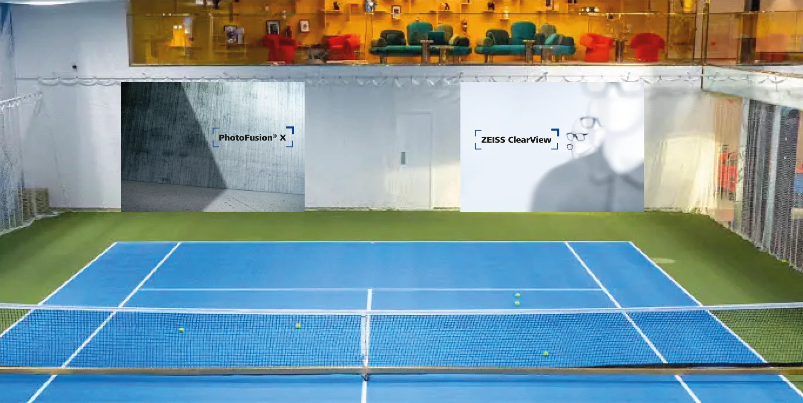
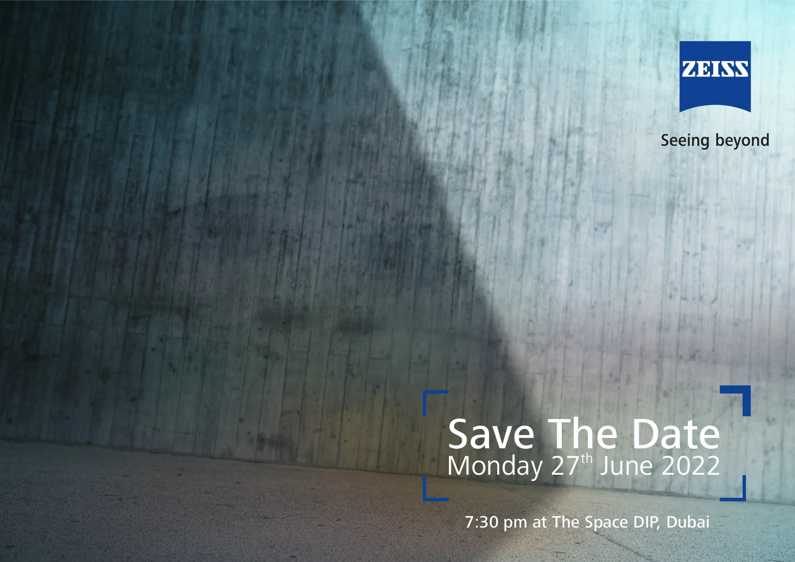
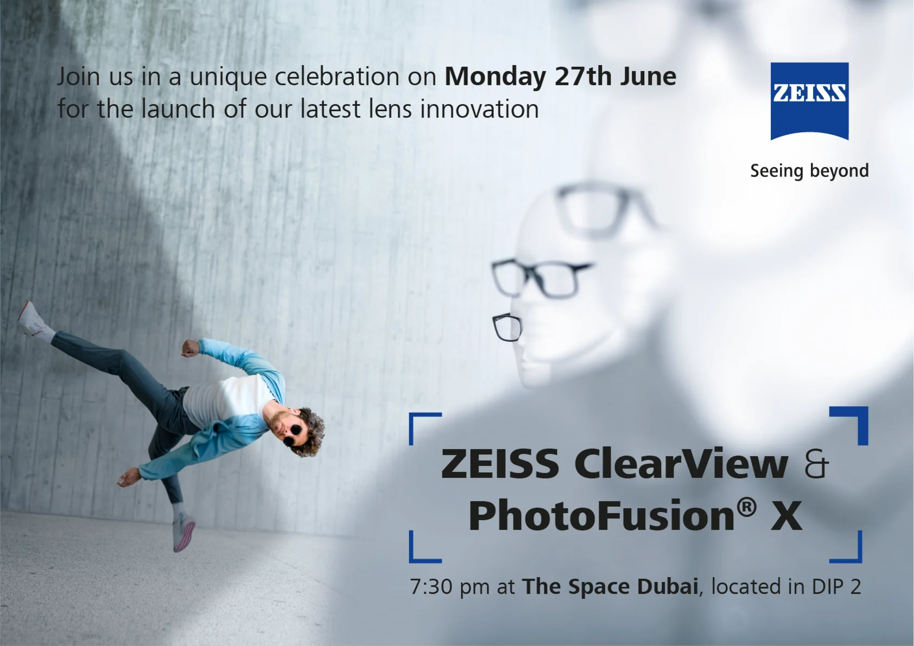
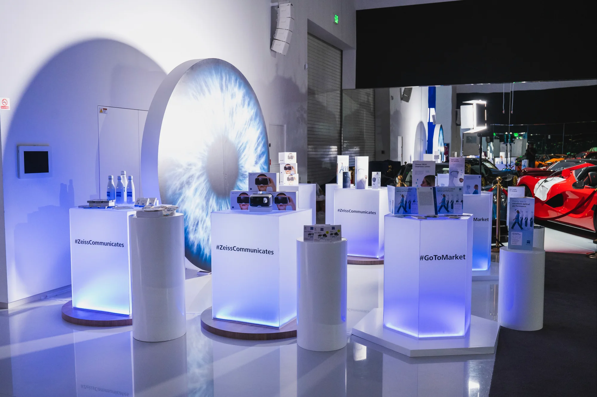
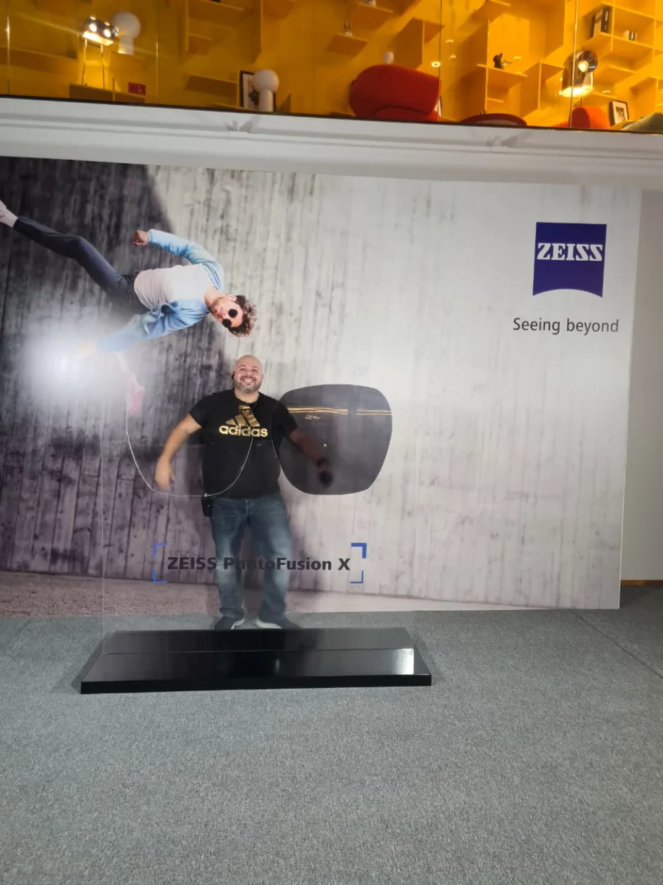

ZEISS
Two lenses, one night. I led it.Antoni Gerges, Executive Creative Director · AntBrush, with Mission Control X
ZEISS launched two lenses in one night. I led it, from the first sketch to the last screen.
Read more
ZEISS Vision Care launched two lenses, ClearView and PhotoFusion X, in one night at The Space, Dubai, on 27 June 2022. I led it from the first sketch to the last screen: the idea, the invitations, the films, the space. Made by AntBrush, with Mission Control X.
The ZEISS brackets frame what you should look at. First they framed only a date, on a bare wall. Then the invitation showed who was coming: the campaign athlete and the two lenses. A reminder followed, in the same frame.
The 3D models are made from the production artwork. The way in is one space: the long screen with our film, and ten sail flags on the carpet. The two signs carry an arrow, the launch name and the logo, printed on both sides. The entrance wall is an L on the stairs, 4 ft 11 in + 11 ft 2 in wide.
Both photo walls were drawn into the sports hall before anything was printed.

My design. Two acrylic lenses, one clear and one tinted, the way PhotoFusion X darkens in the sun. Guests stand behind them. The base is 5 ft 7 in × 2 ft 4 in.
The film for the 74-ft wall runs from IT’S TIME to NOT STANDARD.
Tease, then reveal.
First only a date on a bare wall. Then the invitation shows who is coming.
Save the date


Then every piece,
in 3D.
Each model, then the same piece on the night.
The way in
The long screen with our film, and ten flags on the carpet.
Two signs
An arrow, the launch name, the logo.
The entrance wall
The athlete meets guests on the stairs.
The ClearView wall
A photo wall and a row of mannequins, all wearing the lens.
The photo booth
My design. Two acrylic lenses, one clear, one tinted. Guests stand behind them.
The eye
The back wall of the product display.
74 feet of screen
Our film for the main wall.

It’s time.
Doors.
A countdown on the wall. Then the shutter rises on ZEISS.Film · Mission Control X
Keynote.
The two lenses, presented.Film · Mission Control X
Dinner.
One long table, under the gold car. Then the film of it all.Film · Mission Control X
Executive Creative Director
Film of the night by Mission Control X.

before the doors opened